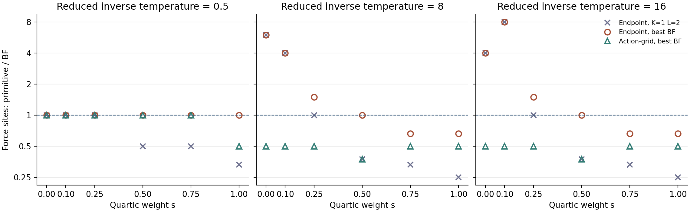
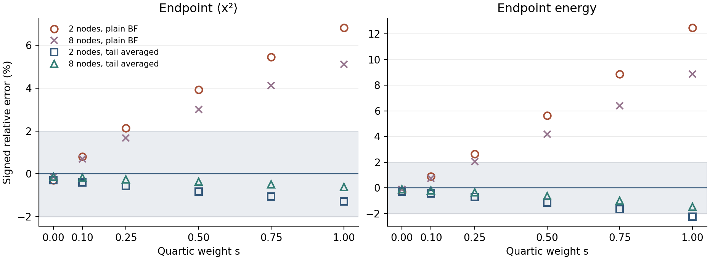
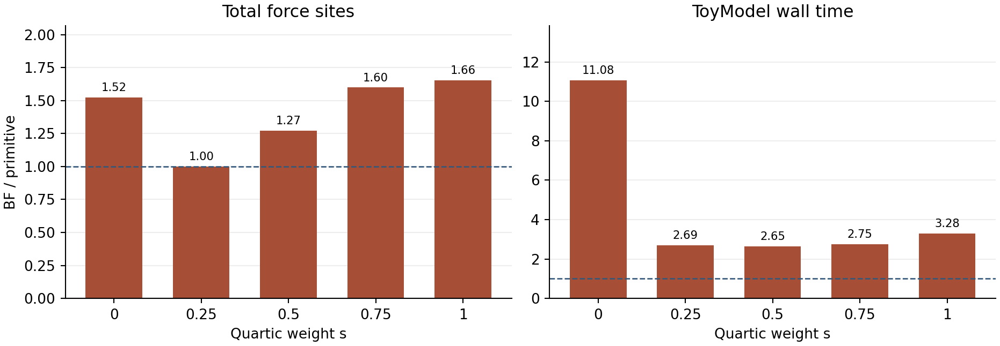

PIMD Series - Part IX
When Bead–Fourier Saves Force Evaluations
Suppose two neighboring beads are already fixed. With one extra coordinate, ordinary path-integral molecular dynamics (PIMD) can insert a bead at the midpoint. Bead–Fourier PIMD (BF-PIMD) can use a single sine amplitude to bend the entire segment. Both spend one additional degree of freedom. The question is which change gives the potential the information it needs to assign the segment its quantum statistical weight.
Part I derived the ordinary ring-polymer measure, and Part VI used a Fourier transform to propagate its free springs. Here the sine functions change the finite-resolution equilibrium measure itself. A harmonic bridge shows why the change can save force evaluations. Turning the same well into a quartic well reverses the comparison at a fixed force budget.
1. The segment between two beads
Let \(P\) be the number of beads, \(\beta\) the inverse temperature, and \(\epsilon=\beta/P\) the imaginary-time slice in inverse-energy units. In the trace of \(e^{-\beta H}\), a primitive PIMD link between \(q\) and \(q'\) has the weight
where \(\rho_0\) is the free-particle kernel. The symmetric factorization charges half of the potential action to each endpoint. The exact kernel has the same free prefactor and a conditional average over all intervening free paths, given those two endpoints.
Here \(u\) runs from 0 to 1 along the segment. A free bridge consists of the chord plus a fluctuation that vanishes at its endpoints. The sine expansion diagonalizes the free kinetic weight on this interval.
The \(a_k\) are independent Gaussians in the free bridge. The potential reweights the amplitudes together with the endpoints. BF truncates the sum at \(K\) and samples the retained amplitudes, using \(L\) weighted evaluations of \(V\) per segment.
Each force at \(x(u_\ell)\) contributes to the variables that built that point. The chain rule multiplies it by \(w_\ell(1-u_\ell)\), \(w_\ell u_\ell\), or \(w_\ell\sin(k\pi u_\ell)\), with a common factor \(\epsilon\) for the dimensionless action. These forces and the free springs define the sampling problem. The \(K=0\) chord with an endpoint trapezoid recovers the primitive action. The \(K=0\) chord with interior quadrature already changes that action. A global normal-mode transform of ordinary PIMD, by comparison, preserves the action and the number of bead coordinates.
2. Why one sine can beat one midpoint
Fix \(q=q'=q_0\) and use \(m=\hbar=\omega=1\) in the harmonic well \(V(x)=x^2/2\). Write \(x(u)=q_0+b(u)\) and \(\bar b=\int_0^1 b(u)\,du\). The segment contributes
When \(q_0\) lies to the right of the minimum, a negative \(\bar b\) lowers the potential action. The area of the bend matters because the force acts along the whole segment. A one-coordinate approximation can reproduce the fluctuations at \(u=1/2\) and still misjudge the fluctuations of the segment mean.
An explicit midpoint samples the exact free displacement \(\delta=x(1/2)-q_0\), with variance \(\epsilon/4\). At fixed \(\delta\), the free conditional mean is a tent with area \(\delta/2\). The two primitive half-links assign the same integral to the force term linear in the displacement. Its free area variance is \(\epsilon/16\), or 75% of the full bridge value \(\epsilon/12\).
A single sine has only about 81% of the exact midpoint variance. Its area is \(2a_1/\pi\), so it retains \(8\epsilon/\pi^4\), or 98.6% of the exact area variance. With two interior Gauss–Legendre points, the sampled area still retains 92.3%. The first sine matches the direction to which a nearly constant force along the link is most sensitive.
The potential term quadratic in \(b\) also matters. It can be included by completing the square in the Gaussian integrals for this model. An added coordinate \(z\) enters the exponent as \(-A z^2-Dq_0z-\epsilon q_0^2/2\). Integrating \(z\) gives \(C=\epsilon/2-D^2/(4A)\). For example, the analytically integrated first sine gives \(A=\pi^2/(4\epsilon)+\epsilon/4\) and \(D=2\epsilon/\pi\). Write the diagonal kernel as \(\rho(q_0,q_0;\epsilon)\propto e^{-Cq_0^2}\). For a single coarse segment of length \(\epsilon=1\) this gives the following check.
| Representation | Coefficient \(C\) | Value |
|---|---|---|
| Exact bridge | \(\tanh(\epsilon/2)\) | 0.462117 |
| One explicit midpoint, two primitive links | \(\epsilon/2-\epsilon^3/[4(8+\epsilon^2)]\) | 0.472222 |
| One sine, two Gauss–Legendre nodes | \(\epsilon/(2[1+2\epsilon^2 f^2/\pi^2])\) | 0.464278 |
| One sine, analytic segment integral | \(\epsilon/2-4\epsilon^3/[\pi^2(\pi^2+\epsilon^2)]\) | 0.462714 |
Here \(f=\sin[\pi(1-1/\sqrt{3})/2]\) is the value of the first sine at either quadrature node. For the same coarse ring of \(P\) segments, inserting one ordinary midpoint per segment and using \(K=1,L=2\) each cost \(2P\) force sites per step. The smaller error in \(C\) demonstrates an advantage for the diagonal link only. The full-ring comparison below tests the combined influence of diagonal and off-diagonal links.
One way to see why the harmonic result is possible is to look at higher \(k\). Each additional amplitude has free variance proportional to \(k^{-2}\), while its overlap with the linear potential response along the chord scales as \(k^{-1}\). At fixed slice length its contribution to the endpoint-dependent Gaussian action is therefore of order \(k^{-4}\). Higher modes can make the path rough while contributing weakly to the relative weights of its endpoints. In physical units the ratio of harmonic to free stiffness for mode \(k\) is \((\epsilon\hbar\omega/k\pi)^2\). Both the slice length and the curvature sampled by the path matter.
3. Change the potential at the same force budget
The ToyModel test uses a single family with \(m=\hbar=1\).
For each \(s\) the reduced inverse temperature is \(B=\beta(E_1-E_0)\), where \(E_1-E_0\) is the first quantum gap of that well. Holding \(B\) fixed holds the first-excited to ground-state Boltzmann ratio at \(e^{-B}\). The numerical value of \(\beta\) and the higher-state weights can change with \(s\). The scan covers \(B=0.5,8,16\).
The convergence targets are the thermal \(\langle x^2\rangle\) and energy. The quantum reference comes from a refined spatial diagonalization. For each finite action, a separate transfer-kernel calculation integrates the local amplitudes and contracts the cyclic product of kernels. This measures discretization bias independently of thermostat sampling and time-step error. The energy is read as the virial observable \(V_s+xV_s'/2\), using the identity below.
The BF endpoint estimator averages this observable over the beads. The action-grid estimator averages it over the weighted interior positions that define the potential action. Scaling the coordinates in the finite partition function gives the action-grid energy as its thermodynamic derivative. Both estimators approach the same quantum observable on refinement. At finite \(P,K,L\), each has its own bias.
At \(B=8\), hold the force budget at 16 sites per step. Compare ordinary \(P=16\) with BF \((P,K,L)=(8,1,2)\), both using the endpoint estimator. The harmonic maximum relative error across the two observables falls from 2.98% to 0.30%. For the pure quartic it rises from 5.54% to 12.48%. On the very same BF action the action-grid energy errors are about \(-16.42\%\) and \(-21.80\%\), respectively. A good endpoint value can coexist with a poor estimate along the full segment.
The wider scan asks for both observables to be within 2% of the quantum reference, at the candidate bead count and all sampled refinements, with at least one finer point. The table reports the first persistent pass on the tested grid for each scheme, then selects the BF scheme with the fewest force sites. These are grid-based thresholds.
| Quartic weight \(s\) | Ordinary beads and force sites | BF \((P,K,L)\) | BF force sites |
|---|---|---|---|
| 0 | 24 | (2, 1, 2) | 4 |
| 0.10 | 24 | (3, 1, 2) | 6 |
| 0.25 | 24 | (8, 2, 2) | 16 |
| 0.50 | 24 | (12, 2, 2) | 24 |
| 0.75 | 32 | (24, 2, 2) | 48 |
| 1 | 32 | (24, 3, 2) | 48 |


At \(B=0.5\), two sites suffice for either method with the endpoint estimator across the family. At \(B=16\) the endpoints still favor BF for the first three shapes, and the least expensive case is \(s=0.1\). The boundary varies with temperature and need not move monotonically with \(s\). At \(B=8\) and \(16\) the action-grid estimator needs more BF force sites than ordinary PIMD at all six tested shapes.
4. What the omitted modes do in the quartic well
At a quadrature node let \(x\) denote the path built from the retained modes. Add back the free omitted fluctuation \(\eta\) at that node, with variance
The effective action is the negative log of the conditional average of the exponential of the potential action. Its first cumulant uses the Gaussian-averaged potential pointwise. For this family the pointwise average is explicit.
The first and last terms are independent of \(x\) and cancel when normalizing the endpoint distribution. At \(s=0\) this first-cumulant change leaves the normalized endpoint moments unchanged. Higher cumulants still contain the effect of harmonic path reweighting. At \(s\gt0\) the middle term adds curvature \(3s\sigma^2\) to the conditional potential. The wiggles are more costly on the sides of the well, so integrating them out penalizes large retained excursions. A truncation that sets them to zero loses this effect.
At the pure quartic end, with \(B=8,P=8,K=1,L=2\), adding just this term to the sampled action moves the endpoint energy error from \(+12.48\%\) to \(-2.25\%\). With eight quadrature nodes the corresponding change is \(+8.85\%\) to \(-1.49\%\). Across the 20 paired nonharmonic controls, both endpoint errors shrink in 18 cases. At the remaining two configurations the first-cumulant correction overcompensates. This isolates one source of the error while leaving higher cumulants and other discretization errors in play.


Quadrature error can cancel part of the truncation error. For \(B=16,s=0.1,P=3,K=1\), the endpoint energy error changes from \(+1.43\%\) with two quadrature nodes to \(-11.61\%\) with four. Refining \(L\) resolves the potential integral for the retained path, which can expose the bias that was already present in that path. This is why a single favorable \(P,K,L\) is weak evidence for convergence.
5. Force evaluations and time to a statistical result
Ordinary PIMD uses \(P_{\rm ord}\) force sites per step. BF with interior quadrature uses \(P_{\rm BF}L\). A trapezoid with \(L\) panels has \(L+1\) points per segment, with endpoints shared between neighbors, so the full ring still has \(P_{\rm BF}L\) distinct sites. Counting these sites answers a question about discretization and cost per step. The actual work to estimate a mean also depends on fluctuations and correlations.
Here \(N\) counts saved draws at the chosen stride, \(\sigma_A^2\) is the estimator variance and \(\rho_A(r)\) is its lag-\(r\) autocorrelation. With serial cost dominated by forces, the comparison is between \(n_{\rm target}P_{\rm ord}\) and \(n_{\rm target}P_{\rm BF}L\), with each method's own \(n_{\rm target}\). With cheap forces, the measured time to propagate and evaluate an entire step also matters.
The ToyModel timing comparisons used Langevin BAOAB, with mass preconditioning, a common \(\Delta\,dt=0.08\) and centroid friction \(\gamma_0/\Delta=1\), where \(\Delta=E_1-E_0\) in the model units. Each sampling case used 48 independent chains, 2,500 burn-in steps and 36,000 production steps, saving every fourth step. Means were checked against their finite-action references, with selected half-step controls. Five interleaved timing repeats measured both single-path step cost and 48-chain batch step cost. The batch timing and effective sample count give the projected time from equilibrium to 1% relative standard error for both observables.
For the harmonic case at \(B=8\), the four-site BF scheme needs only one-sixth as many force sites per step, but projects to 1.52 times the total force sites and 11.08 times the projected wall time. Refining it from two to three coarse beads changes these ratios to 0.96 and 4.78. At \(B=16\) a harmonic configuration projects to 0.86 times the total force sites and 3.81 times the wall time. In the measured ToyModel comparisons the algebra and the sampling cost outweigh the savings in the cheap analytic force.


6. What the published examples reproduce
Harmonic toy models
Ivanov and coauthors tested a harmonic oscillator and a hydrogen atom. London and Momeni considered harmonic and anharmonic oscillators. The reproductions here target their harmonic equilibrium tests, where the finite action and the quantum answer can both be integrated analytically. [Ivanov et al., London and Momeni, model systems]
London and Momeni used a unit harmonic oscillator and a 20-panel trapezoid for the BF action. The independent Gaussian calculation falls within all 70 plotted error bars of their equilibrium Figure 1 at \(\beta=8\), counting both estimators. The figure does not specify a confidence convention for the bars. At a strict 1% endpoint energy bias, BF with \(P=4,K=2\) uses 80 force sites per step, versus 32 for the ordinary \(P=32\) comparator on their grid. In the local OBABO implementation, the corresponding single-path step times were 41.1 and 21.5 microseconds. [London and Momeni, Paper II, section IV.1]
The chosen thermostat changes the outcome at fixed statistical error. With the paper's centroid thermostat time constant \(\tau_0=50\), the BF case needs about 0.37 times the ordinary production steps by stationary Gaussian covariance. Combining that with measured 32-chain batch throughput gives projected costs of 5.28 s for BF and 9.96 s for ordinary PIMD, at 1% relative standard error. With \(\tau_0=1\) the stationary calculation projects BF to cost 2.16 times as much, keeping the actions and timing rates fixed. The action-grid comparison at the same bias and sampling targets is also slower for BF on the published grid.
Ivanov, Lyubartsev, and Laaksonen give an analytic harmonic segment action. At \(\beta=2\) their three-bead, one-mode calculation reports endpoint energy 0.655. The same finite action gives 0.656194, close to the quantum value 0.656518. In their low-temperature example at \(\beta=15.8\), the analytic five-bead, two-mode calculation gives 0.493921 against 0.500000 for the quantum reference, a \(-1.216\%\) error. Four modes give \(-0.231\%\). The four-mode action meets the quoted 0.3% accuracy. Its projected cost at that accuracy was 2.40 times that of ordinary PIMD in a local comparison using PILE thermostats for both methods. [Ivanov et al., section II.C]
Liquid water and ice
The atomistic paper reports a different favorable combination. For q-TIP4P/F liquid water at 300 K and hexagonal ice at 150 K, endpoint radial distribution functions agree with ordinary PIMD references at 32 and 64 beads, respectively. BF uses \(P=8,K=1,L=2\) for both, or 16 force sites per step. The reported serial step speedups are about \(2.25\times\) and \(5.5\times\), with reductions in neighbor-list and normal-mode work as well as force calls. The comparison times individual steps at a resolution chosen for those structural observables. [Radial distribution functions, computational performance]
The harmonic bridge shows what makes the speedup possible. A few low modes can account for most of the motion to which a particular link weight or estimator responds. A nearly quadratic potential over the thermally sampled segment and an observable insensitive to omitted fluctuations offer favorable conditions. The quartic control shows how that advantage disappears when the omitted fluctuations change the shape of the effective potential. The water and ice results establish a gain for the reported RDFs and implementation. Transferring it to another observable, temperature, or potential takes a new matched-accuracy comparison.
Calculation files
- Single-segment Gaussian check for the midpoint, sine, and two-node formulas in Section 2.
- ToyModel shape scan protocol and data behind Figures 1–3. The executable checks include the transfer-kernel reference, tail control, sampling and timing, and figure generator.
- Harmonic literature reproductions, with an equilibrium and stationary-covariance runner. Harmonic cost data.
References
- N. London and M. R. Momeni, Real-time dynamics with bead-Fourier path integrals. II. Bead-Fourier RPMD. arXiv:2510.09961v2.
- S. D. Ivanov, A. P. Lyubartsev, and A. Laaksonen, Bead-Fourier path integral molecular dynamics, Phys. Rev. E 67, 066710 (2003). DOI.
- N. London and M. R. Momeni, Real-time dynamics with bead-Fourier path integrals. III. Atomistic condensed-phase simulations. arXiv:2611.18749v1.